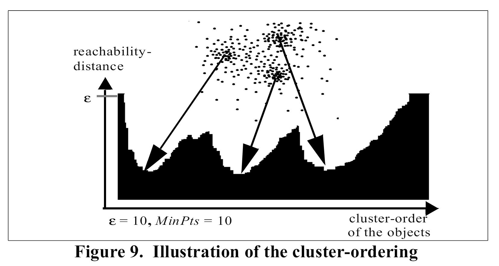
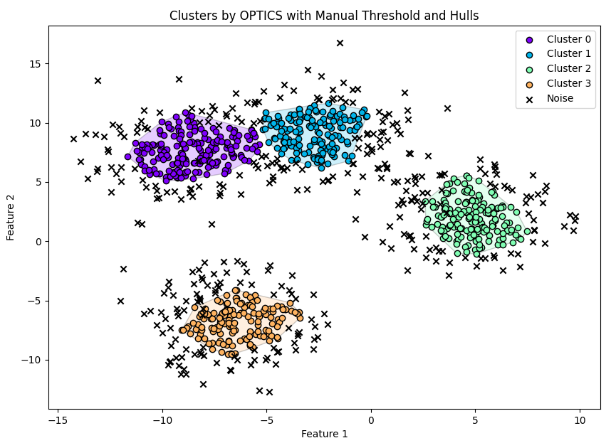
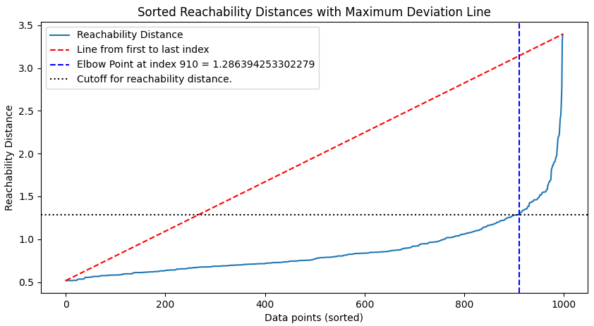
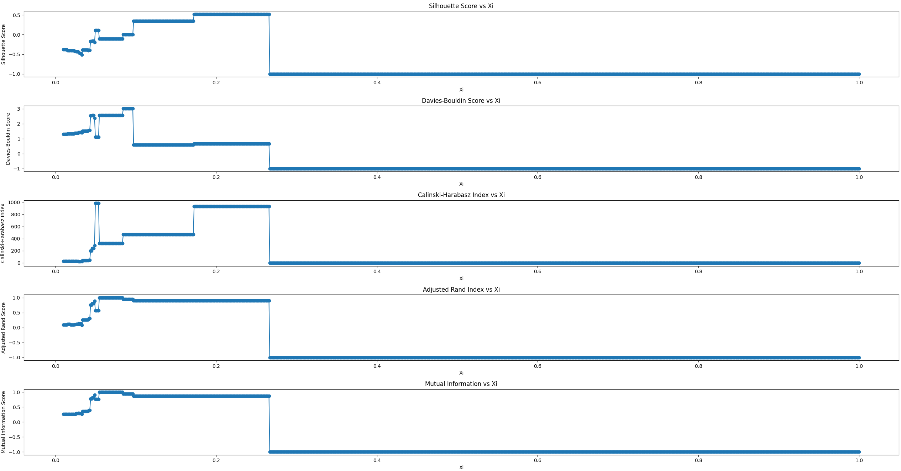
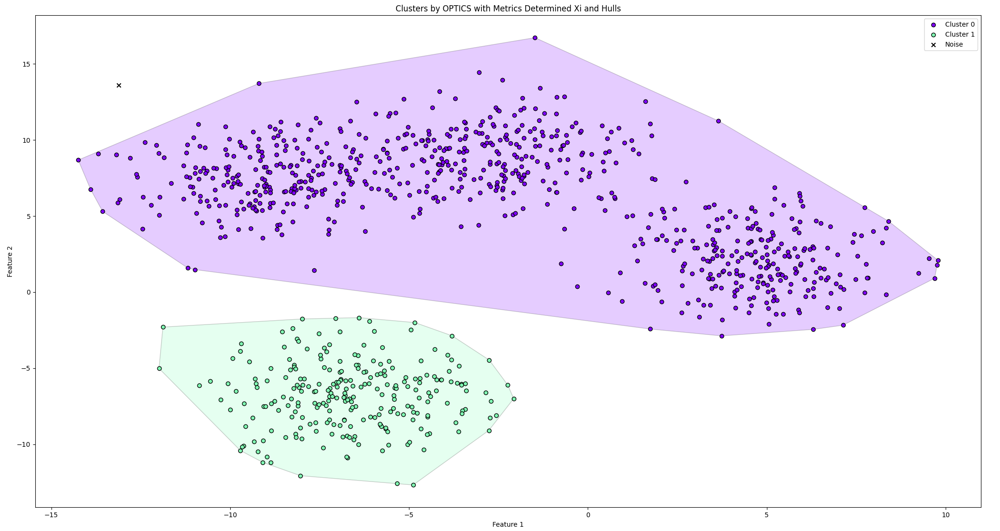

Clustering with OPTICS
Within the realm of unsupervised machine learning, clustering methods play a critical role in unraveling patterns and groupings within datasets where the labels are unknown. Among these clustering techniques, OPTICS(Ordering Points To Identify the Clustering Structure) stands out as a particularly powerful tool when dealing with complex datasets with varying densities or non-globular shapes. This exploration of OPTICS should get you up to speed on the basics of what OPTICS does and will help you understand its mechanics, benefits, and practical applications.
Introduction to OPTICS Clustering
Developed in 1999 by Mihael Ankerst, Markus M. Breunig, Hans-Peter Kriegel, and Jörg Sander(it’s worth a read) , extends the concepts of traditional density-based clustering algorithms. Unlike its predecessor DBSCAN, which partitions the data into clusters based on a set radius and minimum number of points, OPTICS explores data relationships at various scales of density. This flexibility allows it to identify clusters with varying densities and/or complex structures.
Core Concepts of OPTICS
The core of OPTICS is built around two concepts which are Reachability Distance and Ordering of Points.
- Reachability Distance: Central to the functionality of OPTICS is the concept of reachability distance. This metric doesn’t merely measure the physical proximity between points(as DBSCAN might) but also considers the density of the surrounding area. It blends the spatial distance with local density to provide a high level perspective on how the points are related, highlighting the edges of clusters and distinguishing outliers. This reachability distance is absolutely critical in visualizing the data density which traditional distance measures might gloss over. In the image below from Ankerst et al(1999) we see three distinct clusters wherein the highest density region is indicated. 
- Ordering of Points: OPTICS excels in its ability to produce an ordered list of the dataset’s points based on their density connectivity. This ordering goes beyond a simple sequence; it tells a story about how each point relates to its neighbors, forming a continuous, density-based narrative of the dataset. Such an ordered arrangement is not only pivotal for identifying clusters but also enhances the interpretability of the data, allowing clearer visualizations of the clustering structure. In the above structure, if we drew a horizontal line such that we would have 3 “valleys” we can establish a ceiling upon which points below the ceiling belong to a cluster and points above are noise. This is coded in Python and described in detail in my Optics In Python post: here. Please see the image below for an example of synthetic data of 4 clusters clustered using OPTICS. Note the colored data below the threshold and the noise above it.


Benefits of Using OPTICS
OPTICS offers several advantages over more rigid clustering algorithms, making it particularly useful in diverse analytical scenarios:
Handling Varying Density: One of the standout features of OPTICS is its ability to manage clusters of varying densities. In many real-world datasets, clusters aren’t uniform; some are tightly packed, while others are spread out. OPTICS adapts to these variations seamlessly, capturing a wide range of cluster configurations without the need for prior knowledge about their properties. Recall in the above example where the reachability distance value was set to identify four distinct clusters. It is also possible to first segment the clusters into three distinct clusters, segment that data into three parts, then perform cluster analysis again on the larger chunk in the upper right to further segment. This is one way of handling density issues with OPTICS.
Flexibility in Cluster Shape: Unlike algorithms that assume clusters to be of a roughly spherical shape, OPTICS is effective at identifying clusters of arbitrary shapes. This capability is crucial when dealing with complex spatial data patterns that are common in many scientific and industrial applications such as biology where cells can take on a variety of shapes.
Reduced Sensitivity to Parameters: While OPTICS does require parameters similar to DBSCAN, such as the minimum number of points to form a cluster, it is less sensitive to the settings compared to DBSCAN’s reliance on the epsilon parameter. This reduced sensitivity decreases the need for repeated trial-and-error parameter tuning, which can be both time-consuming and technically challenging. In the example above, the only parameter set for the initial OPTICS model was min_pts. From there the optimal cutoff was determined mathematically using an elbow cutoff point as in the image below and then clustered using that parameter. Upon further analysis, it was determined by looking at the reachability plot that a value of 0.88 would more accurately capture the four clusters.

Practical Applications of OPTICS
OPTICS has been applied successfully across a broad spectrum of fields:
Ecology: For studying spatial patterns of species distributions and identifying environmental niches.
Market Research: In identifying customer segments based on purchasing behavior or preferences, which may vary greatly in their characteristics.
Astronomy: Useful in star cluster analysis, where the density and shape of clusters can provide insights into cosmic structures and processes.
Traffic Management: For analyzing congestion patterns across different times and areas, aiding in more dynamic traffic planning and management.
Evaluating the Performance of OPTICS Clustering
To determine the effectiveness of the OPTICS clustering algorithm, several metrics can be employed that assess different aspects of clustering quality. Each metric provides valuable insights into how well the algorithm has identified meaningful clusters, offering a comprehensive view of its performance. Below, we discuss the most commonly used evaluation metrics for clustering algorithms such as OPTICS:
1. Silhouette Score: This metric measures the degree of separation between clusters. The silhouette score evaluates how close each point in one cluster is to points in the neighboring clusters. This score ranges from -1 to 1, where a high value indicates that the clusters are well-separated and clearly defined. A high silhouette score is often indicative of a model that has effectively captured the natural groupings in the data.
2. Davies-Bouldin Index: The Davies-Bouldin index is a measure of the clustering validation technique which provides a score for each cluster. This index is essentially the ratio of the sum of within-cluster scatter to between-cluster separation. The lower the Davies-Bouldin index, the better, as it indicates that the clusters are more compact and well-separated from each other. This index is particularly useful in scenarios where one needs to compare the performance of different clustering algorithms or configurations.
3. Calinski-Harabasz Index (Variance Ratio Criterion): This index evaluates clusters by computing the ratio of the sum of between-clusters dispersion and of within-cluster dispersion for all clusters (where dispersion is defined as the sum of distances squared). The higher the Calinski-Harabasz index, the better the clustering performance, suggesting that the clusters are dense and well-separated, which is an ideal scenario in many practical applications.
4. Adjusted Rand Index (ARI): The Adjusted Rand Index is a measure of the similarity between two data clusterings - from the same dataset - and is adjusted for the chance grouping of elements. This index takes values between -1 and 1, where higher values indicate that the clusters in the dataset largely agree, except for some pairs of objects that are put in the same or different clusters across the compared clusterings. The ARI is particularly useful for validating the consistency of clustering results across different runs of the algorithm or parameter settings.
5. Mutual Information: Mutual information measures the amount of information shared between two clusterings, providing insights into their similarity. It assesses how well one clustering predicts the other, with higher values indicating more shared information. Ideally, a high mutual information score, adjusted for chance (such as Adjusted Mutual Information), suggests that significant and relevant information about the dataset’s structure is captured by the clustering. This makes mutual information a robust assessment of clustering quality, especially in complex datasets with underlying patterns not readily discernible by other metrics
These evaluation metrics collectively offer a holistic view of OPTICS’ performance, highlighting its strengths and weaknesses in various data scenarios. By carefully analyzing these scores, one can gauge the clustering’s effectiveness and make informed decisions about the use of OPTICS in specific contexts or datasets.
Understanding the Role of Xi in OPTICS Clustering
Functionality of Xi in Clustering
Xi (ξ): A crucial parameter in the OPTICS algorithm is Xi (ξ), which significantly influences how clusters are determined and extracted from the reachability plot. Xi represents the maximum steepness or relative decrease in reachability within a sequence of points that must be present for it to be considered the start or end of a cluster. Essentially, Xi is a threshold that defines what constitutes a sufficient density drop to separate clusters.
Xi plays a pivotal role by acting as a sensitivity parameter that helps in defining cluster boundaries based on reachability distances. It’s particularly useful in distinguishing between points that belong to separate clusters versus those that are merely outliers or noise within a single cluster. A lower Xi value typically results in more clusters with finer granularity, as it identifies smaller changes in density as significant. Conversely, a higher Xi value tends to produce fewer, larger clusters, indicating that only larger changes in reachability are considered meaningful for cluster separation.
Choosing an Optimal Xi Value
Selecting an appropriate Xi value is critical for achieving effective clustering results with OPTICS. There isn’t a one-size-fits-all value for Xi, as the optimal setting depends on the specific characteristics and distribution of the data. Experimentation and domain knowledge are often necessary to determine the most suitable Xi value for a given dataset. Visualization tools such as reachability plots can be extremely helpful in this process, providing a visual representation of how different Xi values affect clustering outcomes.
Impact of Xi on Clustering Outcomes
The choice of Xi can have profound effects on the resulting cluster structure:
High Xi Values: May overlook subtle but potentially meaningful cluster boundaries, merging distinct groups into broader clusters.
Low Xi Values: Can over-segment the data, identifying many small clusters that might better be understood as variations within larger clusters.
It’s also important to consider that the performance of clustering with different Xi values should be evaluated using metrics like the Silhouette Score, Davies-Bouldin Index, and others discussed earlier. These evaluations can confirm whether the selected Xi value effectively captures the underlying patterns in the data without introducing too much noise or losing significant structures. One such way of evaluating Xi is to evaluate the metrics discussed above with values of Xi between 0.01 and 1 in linspace() of roughly 1000. This way one can determine what the optimal value of Xi is based on each of those five metrics and also average the metrics with different weights to arrive at an ideal clustering. This is performed in the code described in this post. Please see the image below for the Xi values for each metric for the dataset shown above and the resulting “optimal” Xi clustering:


As one can see optimizing Xi sometimes has strange end results and sometimes it is best to stick with arbitrary cutoff points of reachability distance visually.
Extending OPTICS to 3 Dimensions and Beyond
As datasets grow in complexity and dimensionality, traditional clustering algorithms often struggle to maintain effectiveness and efficiency. OPTICS, with its robust framework, scales well into higher dimensions, including three-dimensional (3D) data and beyond. This adaptability makes it particularly useful in fields such as geospatial analysis, 3D medical imaging, and multidimensional market segmentation.
Challenges of Higher Dimensional Clustering
As the dimensionality of the data increases, several challenges arise:
Curse of Dimensionality: In higher dimensions, the volume of the space increases exponentially, making the data sparse. This sparsity dilutes the concept of proximity because all points tend to be equally far from each other, complicating the task of identifying dense regions.
Computational Complexity: Calculating distances and maintaining neighborhood information becomes computationally more demanding as the number of dimensions grows.
Interpretability: Visualizing and interpreting results in high-dimensional spaces is inherently difficult, which can make it challenging to derive actionable insights from the clustering output.
Adapting OPTICS for Higher Dimensions
Despite these challenges, OPTICS’s methodology is well-suited for high-dimensional spaces due to its focus on relative density rather than absolute distance measures. Here’s how OPTICS can be effectively applied to higher-dimensional data:
Dimensionality Reduction Techniques: Before applying OPTICS, it can be beneficial to employ techniques such as PCA (Principal Component Analysis) or t-SNE (t-Distributed Stochastic Neighbor Embedding) to reduce the dimensionality of the data. This preprocessing step helps mitigate the curse of dimensionality and can highlight inherent structures in the data more effectively.
Parameter Adjustment: In higher dimensions, the parameters of OPTICS, especially min_samples and Xi, might need adjustment. A higher min_samples value might be necessary to adequately capture the density structure in a more sparse environment.
Enhanced Distance Metrics: Employing different metrics for calculating distances (e.g., Manhattan distance for higher-dimensional geometrical data or cosine similarity for text data) can help in better capturing the true dissimilarities between data points in higher-dimensional spaces.
Practical Applications in Higher Dimensions
OPTICS’ flexibility in dealing with different types of data and its robustness in various dimensions have facilitated its application across a wide range of domains:
Geospatial Analysis: Clustering geographical data points not only based on latitude and longitude but also considering elevation, leading to more nuanced cluster formations that can inform environmental studies and urban planning.
Medical Imaging: In medical imaging, especially in studies involving 3D scans, OPTICS can be used to identify regions of interest, such as tumors in 3D MRI scans, based on their density and spatial properties.
Financial Markets: Analyzing multi-dimensional data in finance, such as movements in various market indicators, where OPTICS can help identify anomalous behaviors or cluster markets by trading patterns.
In conclusion, OPTICS stands as a formidable and versatile tool within the field of unsupervised machine learning, adept at uncovering intricate cluster patterns in complex datasets where traditional methods might falter. Its unique approach to handling varying densities and shapes of data clusters makes it invaluable for a wide array of practical applications, from ecological studies to advanced medical imaging and beyond. By integrating sophisticated metrics to evaluate its performance and extending its capabilities into higher dimensions, OPTICS not only meets the demands of modern data challenges but also opens new avenues for innovative data exploration and analysis. Whether dealing with 2D or multi-dimensional datasets, OPTICS offers a powerful, flexible solution for extracting meaningful insights from raw data, demonstrating its enduring relevance and utility in an increasingly data-driven world.